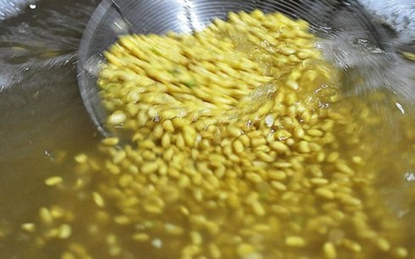
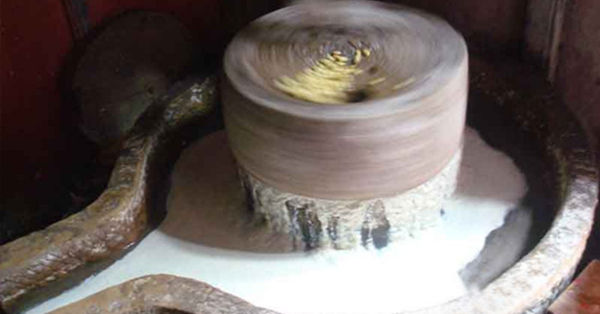
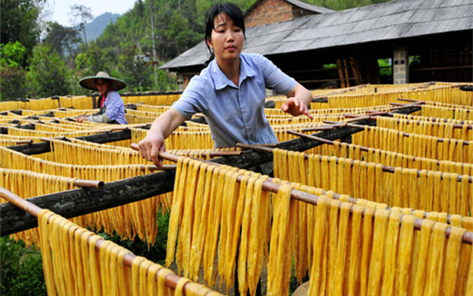

腐竹作为一种高营养价值的豆制品，千百年来一直受到人们的欢迎，可很多工厂生产的腐竹为了更好的口感和延长保质期，往往会添加一些对人体有害的化学物质。腐竹虽然在很多地方都有出产，特别是一些大豆产区，但真正的好腐竹不仅要保持口感、保证色泽美味，更重要的还是要健康。
在山东特产里面，临沂农家腐竹可能不算什么，但却是我们沂蒙山地区千百年来传承的工艺和美味，今天就带大家见识一下我家山东临沂特产——临沂农家自制腐竹。

- 临沂农家自制腐竹的原料
在我们沂蒙山区，很多农家都有种植这种黄豆，俗称“笨黄豆”，属于我们这里的土品种。据市里科研机构的检测，这种黄豆的各种营养成分和价值更高，当然收购价格会更高，而且这种黄豆做出的腐竹豆香味更浓。

制作腐竹的原料无他，就是这一粒粒金灿灿的黄豆。我家的腐竹，都是用能发芽的笨黄豆种子做的原料，这才是自制腐竹中的上品。

农家黄豆经过千挑万选，粒粒都是精品

- 临沂农家自制腐竹的工艺
1、浸泡黄豆 拿来制作腐竹的黄豆，要在头一天晚上用清水浸泡一整晚。这样不仅可以出去黄豆的杂质，也使黄豆更松软。

2、冲洗黄豆 进过了一晚上的浸泡，黄豆已明显变大，接下来就要用清水把它漂洗干净待用。
{kind=link}
3、磨浆 好豆浆是磨出来的，虽然现在机器磨豆机越来越普遍，但还是石磨磨出来的豆子更香!不过现在的石磨都安装了电动设备，可以更多地节省人力。
{kind=link}
4、柞浆 柞浆就是一个过滤的过程，把上一步磨浆磨出来的杂质都过滤掉，这道程序之后，剩下的就是大豆的蛋白质成分了。
5、煮浆 接下来就是煮浆的程序，煮腐竹的经验就是要怎样控制火候、大火煮开后，小火慢慢熬。而且要时常搅动，用铲子翻动锅底，以免糊锅。几分钟后，豆浆会结成一层浆膜，把最最纯净的豆浆缓缓加热,豆浆上面慢慢会起一层油皮，营养价值非常高。把最好的头层油皮揭起，纯净地道，干净卫生才是农家腐竹的特点。
{kind=link}
取过腐竹的豆浆，最有营养价值的成分都在腐竹里面，腐竹是豆子里面精华的所在，一般五斤豆子才能获得一斤腐竹。
6、起竹、晾晒 豆浆煮滚并去除表面的泡沫，停火后过一会，豆浆表面就会凝结成一层浆膜。将浆膜迅速捞出，并挂在竹竿上，这就是起竹过程，一根根优质的腐竹已经产生了，刚出锅的腐竹可以直接吃。
{kind=link}
在天晴的时候，把挂好的腐竹晾晒，就完成了。
{kind=link}
以上就是我家山东临沂农家土特产——自制腐竹的介绍，好腐竹泡水后，水黄而不浑，无黑点和杂质，而且容易泡发，我家世世代代生产腐竹，已经有50年的历史，农家腐竹制作工艺简单不添加任何防腐剂，可能色泽没有超市卖的那么好看，但就是干嚼都那么的香。
- 特产推荐
山东临沂特产沂蒙山区农家自制地瓜干
河南焦作特产温县垆土铁棍山药
云南特产天山雪莲果
韩国进口特产韩国农协蜂蜜柚子茶
- 特产推荐
- 北方地区特产
- 南方地区特产